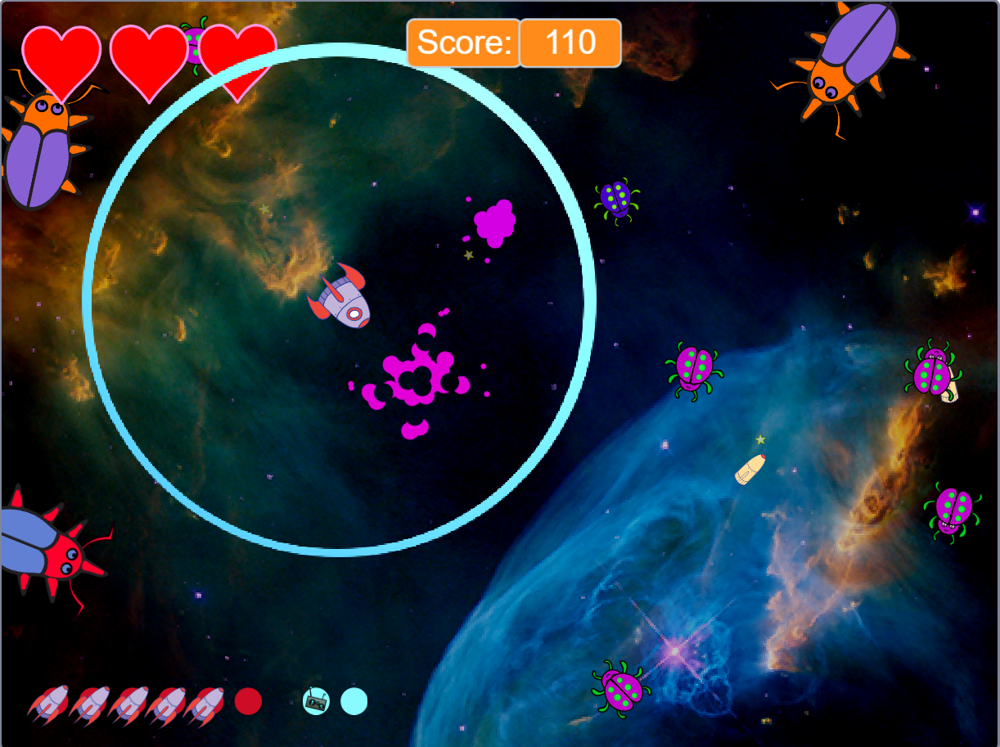
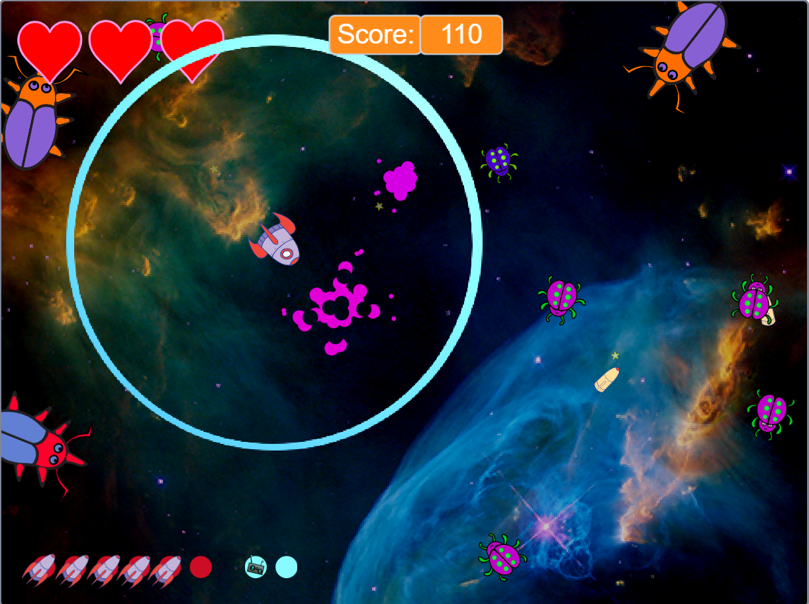

Games and Demos
Broom Knight
 A 2-week demo I made for applying to Attractive Interactive. All graphics/animation and functionality was created by me.
Audio is from various free-audio-download-websites.
A 2-week demo I made for applying to Attractive Interactive. All graphics/animation and functionality was created by me.
Audio is from various free-audio-download-websites.
A 2-week demo I made for applying to Attractive Interactive. All graphics/animation and functionality was created by me.
Audio is from various free-audio-download-websites.
 Two days game jam project for Ludum dare.
Worked on gameplay logic and visual effects.
Two days game jam project for Ludum dare.
Worked on gameplay logic and visual effects.
Bug Attack
 Meteor inspired game, created in Scratch. I re-used and modified standard assets, but all functionality was created by me.
 Meteor inspired game, created in Scratch. I re-used and modified standard assets, but all functionality was created by me.
Tarandrus
A hobby-project I worked on trying out different character-controller movement, applying different methods for handling the character and camera. Trying to strengthen my skills in linear algebra.
A hobby-project I worked on trying out different character-controller movement, applying different methods for handling the character and camera. Trying to strengthen my skills in linear algebra.
Grudge of The Ring
Two days game jam project. Worked on gameplay logic, character modelling/rigging/animating.
Two days game jam project. Worked on gameplay logic, character modelling/rigging/animating.
Snekk
Two days game jam project. Built system for doing tile-based movement and handling various in-game events.
Two days game jam project. Built system for doing tile-based movement and handling various in-game events.
Walk of Life
A simple game made in DirectX for a school assignment. Worked on collision and gameplay logic.
A simple game made in DirectX for a school assignment. Worked on collision and gameplay logic.